Animal Crackers
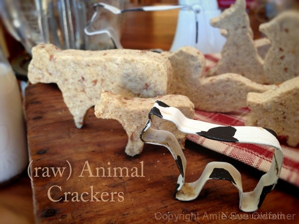
~ raw, vegan, gluten-free ~
Not only will your kids love the taste of these animal crackers, but it will allow them to play safely with wild animals. What more could you ask for?
Animal crackers seem to a part of everyone’s childhood – no matter how many years ago that was… and they are recorded as far back as 1800. I hope no one is still around who can recall that day. haha
More than 40 million packages of Barnum’s Animal Crackers are sold each year. They are baked in a 300 foot long moving band oven for about four minutes and are baked at the rate of 12,000 per minute! Fifteen thousand cartons and 300,000 crackers are produced in a single shift, using some thirty miles of string for the handles on the packages. This runs to nearly 8,000 miles of string a year.
These commercially made animal crackers are made of; ENRICHED FLOUR (WHEAT FLOUR, NIACIN, REDUCED IRON, THIAMIN MONONITRATE [VITAMIN B1], RIBOFLAVIN [VITAMIN B2], FOLIC ACID), SUGAR, VEGETABLE OIL (SOYBEAN AND PALM OIL WITH TBHQ FOR FRESHNESS), DEGERMINATED YELLOW CORN FLOUR, HIGH FRUCTOSE CORN SYRUP, CONTAINS TWO PERCENT OR LESS OF CALCIUM CARBONATE, SALT, LEAVENING (BAKING SODA, SODIUM ACID PYROPHOSPHATE), NATURAL FLAVOR (CONTAINS MILK), SOY LECITHIN, MOLASSES. These they’re not exactly at the height of nutritional excellence. But here at Nouveau Raw times, they are a-changing. :)
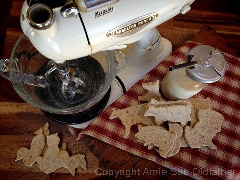
My raw animal crackers are not baked but dehydrated instead on a 16×16″ tray. They take more than 4 minutes to make… more like 12 hours. And I am sorry to say, but I can’t pump out 300,000 in a single shift… more like 48. lol BUT they are made with love, joy, and whole organic ingredients! Nothing can compare to that, right?
These crackers would be a lot of fun to make with little ones, and if they sneak a little dough here and there, you don’t have a worry. :) I used these farm animal cookie cutters that you can be purchased through my Amazon link. But gosh, you can use any animal cookie cutter. So much fun… I hope you enjoy them.
Ingredients:
Yields 50 crackers, depending on cookie cutter size
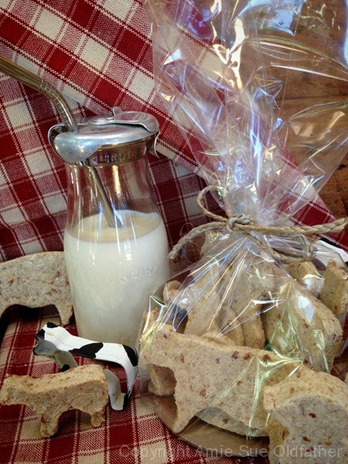
Preparation:
- In a medium-sized bowl combine the almond pulp, almond flour, ground flax, and coconut flour. Set aside.
- Place the apples in the food processor, fitted with the “S” blade, and process until it resembles smooth apple sauce.
- Add the coconut butter, maple syrup, cinnamon, salt, and stevia. Process until creamy.
- Add the almond pulp, almond flour, coconut flour, and flax to the apple mixture and process until well blended.
- Place back in the medium-sized bowl and chill for 1 hour.
- Prepare your work station: To roll the cookie batter out, use either the teflex sheets that come with the dehydrator or lay out wax paper. Dust with coconut flour.
- Place the batter in the center of the teflex sheet and place another one on top. Using a rolling pin, smooth the batter out 1/4 to 1/2″ thick. Peel the top sheet off and with animal cookie cutters, cut out the shapes. I found that dipping the cookie cutters in water helped prevent the cookie batter from sticking. If your cookie cutters are small and have detailed shapes, it might be hard to remove the batter from them. I used a skewer stick to help push the batter out from my cookie-cutter forms.
- Place on the mesh sheet that comes with the dehydrator and dry at 145 degrees (F) for 1 hour, then reduce to 115 degrees (F) for 8+ hours. The dry time is always an estimate based on how dried out you want them, your machine, and the climate.
- Store in an airtight container on the counter and enjoy!
Culinary Explanations:
- Why do I start the dehydrator at 145 degrees (F)? Click (here) to learn the reason behind this.
- When working with fresh ingredients, it is important to taste test as you build a recipe. Learn why (here).
- Don’t own a dehydrator? Learn how to use your oven (here). I do however truly believe that it is a worthwhile investment. Click (here) to learn what I use.
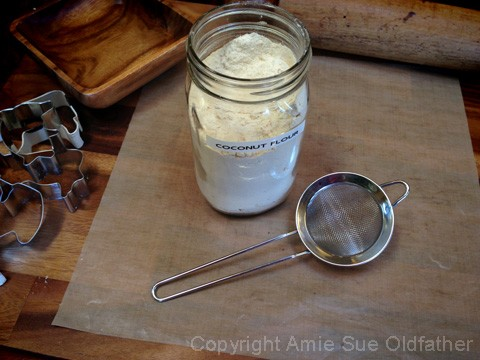
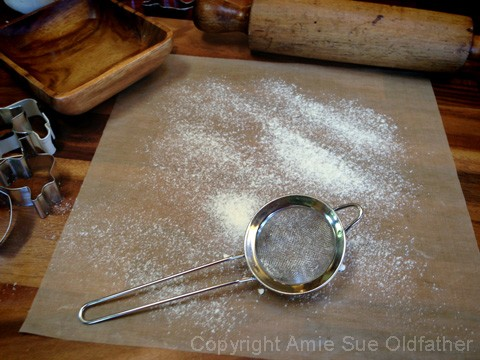
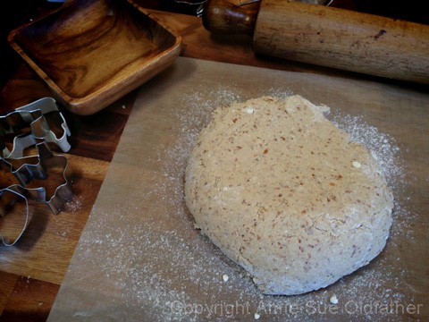
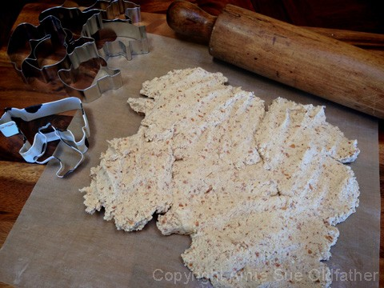
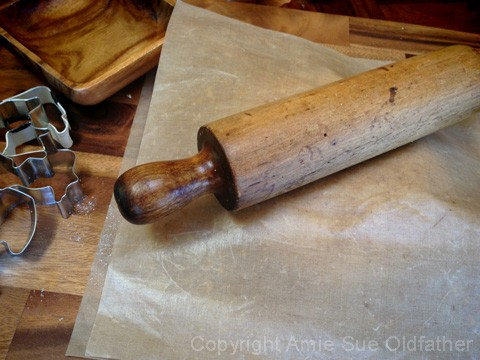
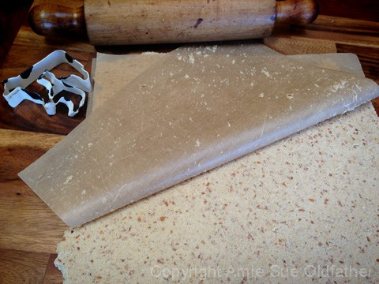
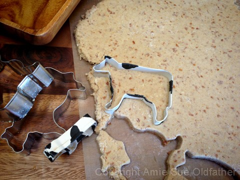
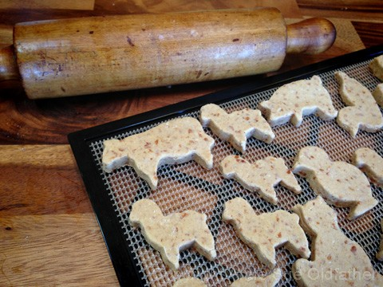
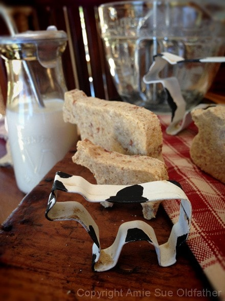
© AmieSue.com